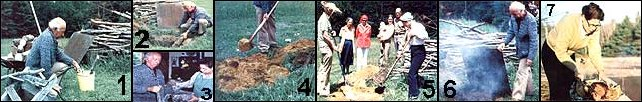

Paul King demonstrates that there is away to make that good ol' "Texas hot stuff" in your very own . . .
If you've ever hungered for the lipsmackin' taste of real barbecue (as opposed to the charred chops most weekend chefs whip up on their grills), perhaps it's time you considered building your own underground barbecue pit. The back-to-basics cookers are much easier to construct than you might think, and require no fancy equipment or utensils. In fact, I actually dug my family's pit myself. . . in the hard, rocky soil of New Hampshire!
Pit barbecuing is nothing more than the slow cooking (and wet smoking) of meat, poultry, or fish-in an airless hole-for about 16 to 20 hours . .. until the viands are tender, juicy, and flavorful. The simplicity of this method of preparation-as well as the low cost of the basic construction-makes it an ideal, inexpensive way to feed a large crowd . .. with truly delicious eats!
MY INTRODUCTION TO BBQ
I first became acquainted with authentic barbecue years ago, when I used to travel through Georgia, Louisiana, and Texas on business. I found that the best meat is served-usually on paper plates-in small, out-of-the-way restaurants . . . places with a few rough tables (or just a stand-up counter) boasting an assortment of homemade sauces that can curl your unsuspecting tongue!
But one day-at a friend's ranch outside of Tyler, Texas-I was served an absolutely scrumptious morsel of home-barbecued beef that rivaled any I'd sampled at the commercial stands. And after I saw the ordinary pit the meat had been cooked in, I could hardly wait to get home and dig one of my own!
GO DIG A HOLE!
All you'll need to make your own barbecue pit are the tools used to dig the opening, some sort of cover, and a supply of dry wood ... it's that simple! The crater that I hollowed out was three feet square and three feet deep ... but you could make yours larger if you think you might ever want to cook up a really big feast. When you excavate your pit-a process that took me about three hours-be sure to pile the subsoil nearby for later use. (You can put aside the rocks and topsoil for potting or other garden projects.)
Just about any rigid-wooden or metal-panel will do for a cover . . . but I had a piece of quarter-inch steel plate cut at a junkyard. (At $3.00, this was the only cash expense involved in building my "underground oven" . . . a cost which you could easily avoid by scrounging around your own back yard for the right-sized board.) Simply make sure the cover you choose measures a few inches wider than does the dirt opening.
To smoke your food, you'll need a bed of glowing coals-about 2-1/2 feet deep-at the bottom of the pit. I have found that one heaping wheelbarrowful of oak or maple chunks-when burned-gives me the depth of embers I need . . . but of course it's always better to have more rather than fewer coals. (And be sure to burn only nonresinous hardwoods in your cooking chamber.)
FIRED UP
I usually start the fire for our weekend barbecue about six o'clock on a Friday evening. Some newspaper and small kindling serve to get the first logs going well . . . and I keep adding the dry wood chunks until there's a good, thick layer of coals. At this point, it's a wise idea to hose down the grass around the pit to douse any sparks that may fly up as you add wood to the fire . . . unless, of course, it's raining (such inclement weather won't interfere at all with the barbecuing process).
It takes about two hours to build up the needed depth of coals ... and that "break" gives me plenty of time to make the other necessary preparations. While the fire is growing, I fell an aspen sapling-1/2 to 2 inches thick-and cut it into four equal lengths (about 2-1/2 feet each). After they've soaked well in a bucket of water, the aspen pieces (or any other green wood you might want to use) will be placed on the coals to give the meat a smoky flavor.
A PLAIN BROWN WRAPPER
Next, it's time to prepare the meat for its subterranean toasting. Put each cut of beef (or pork, poultry, fish, or what have you) in its own dry, clean grocery bag ... which should then be folded tightly around the food. If you don't have any paper sacks available, you can use butcher paper instead (as long as it's wax-free). Then, as a final precooking preparation, wrap each bundle in two sheets of soaking wet newspaper . . . this covering will cling to the inner wrap and make a neat package.
My family thinks rolled chuck roast is the best red meat to barbecue in a pit . . . but a brisket will also be tasty. (We've found that lean meat-such as rib eye or sirloin-doesn't work as well as do the fatty cuts.) And, although we've never prepared deer in our own pit, I have tasted delicious barbecued venison. Remember, though, that any meat will taste only as good as the quality of the cut you select . . . no matter how long you barbecue it.
As for poultry, we've tried various sizes and types of birds . . . but now we use only 12- to 15-pound turkeys in our pit. We also like to cook fish sometimes . . . especially split mackerel. Not only are the swimmers super-tasting when smoked underground, but their bones become as soft as those in canned salmon. (However, do watch out for spines in all barbecued fish, since the larger bones occasionally don't completely soften.)
INTO THE INFERNO...
When the coal bed is ready, I smooth out the embers with a shovel and lay the 2-1/2-foot aspen branches-in a platform pattern-on top. The parcels of meat are then placed on this wooden "grill", and the cover is fitted over the pit. If any smoke seeps out from under the lid, plug up its escape holes with some of the subsoil left over from the excavation. Finally, heap all the remaining earth on top of the cover . . . plus an old blanket, which will help maintain the heat in the pit.
After all this preparation-which will probably take you only half an hour at most-you can sit back and relax . . . while tomorrow's tasty dinner is slowly roasting in the back yard! (I usually close our pit about eight or nine o'clock in the evening, and let the feast cook all night long.)
AND ONTO THE TABLE
Around noon the next day, I sweep aside the dirt covering the hole, raise the cover . .. and lift the steaming prize out of the ground! When you're ready to remove your repast, be sure to wear protective gloves and move quickly ... since the coals may flare up into a fire when the rush of outside oxygen hits them (of course you'll need to put out any such flames immediately).
When you unwrap the savory bundles, you'll be in for a pleasant surprise or two. The outer wrapping of newsprint should still be soaking wet, but the meat inside will be warm and juicy. Barbecued poultry, you'll find, has moist and fatty skin ... while roasts emerge from the pit nicely tender, with no crust. (The first time or two that we tried the technique, the coals hadn't built up enough heat before we closed the hole . .. and as a result, the meat was underdone. If this happens, you can always finish cooking your dinner in a moderate-325° to 350°F-oven.)
ENJOY!
And now comes the best part of pit cookery . .. when you sink your teeth into a steaming, succulent mouthful of meat-maybe even topped with a dollop of spicy sauce-and enjoy the fruits of your labor. Along with a helping of fresh sweet corn and juicy tomatoes from the garden, barbecue makes a summertime meal that's fit for a king! And-as your taste buds will tell you-it's the real thing. . . s ho'nuff!
EDITOR'S NOTE: For a look at another inexpensive way to home-barbecue, you might want to read "MOTHER's No-Cost Barbecue Cooker" in MOTHER NO. 57 (page 95). This back issue is available for $3.00-plus $1.00 shipping and handling-from THE Mother Earth News (restricted) , P.O. Box 70, Hendersonville, North Carolina 28791.
|
 PHOTOS BY THE AUTHOR [1] Aspen logs are soaked . . . [2] and added to the fire to give the meal a smoky flavor. [3] Each individual cut of meat is wrapped securely in its own grocery sack, then swathed in a double layer of wet newspaper. [4] After the pit is covered, it's further insulated with a layer of subsoil. [5] As a group of hungry neighbors watch, the author and his wife sweep the dirt from the hole. [6] Dinner smells wonderfully good . . . [7] and here it is! Come 'n' get it while it's steamin' hot, all you barbecue lovers! |
|
|